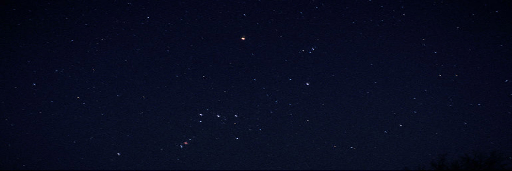

LA CONSTELACIÓN DE ORION
¿Qué hay en la constelación de Orión?
La constelación contiene tres objetos Messier: Messier 42 (M42, NGC 1976, Nebulosa de Orión), Messier 43 (M43, NGC 1982, Nebulosa de Mairan) y Messier 78 (M78, NGC 2068), y tiene siete estrellas con planetas conocidos. Hay dos lluvias de meteoritos asociadas con Orión, Oriónidas y Chi Oriónidas